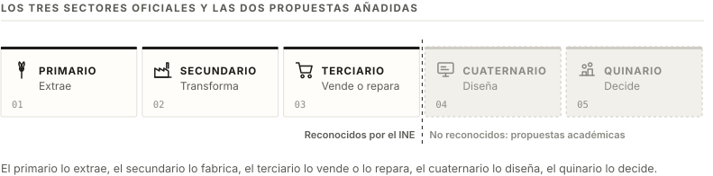
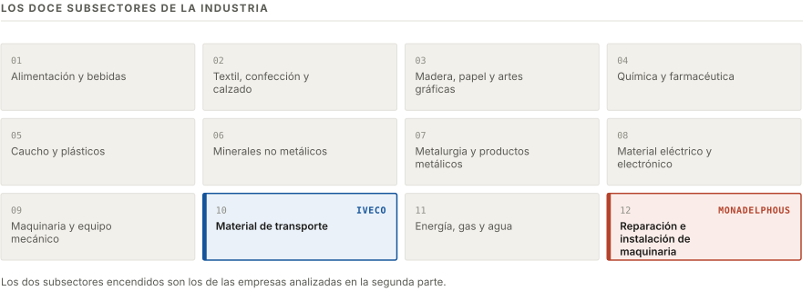

Entorno industrial
Los tres sectores de la actividad económica
El Instituto Nacional de Estadística ordena toda la actividad del país en tres sectores, según lo que se hace con el producto.
| Sector | Qué hace | Ejemplos |
|---|---|---|
| Primario | Saca del medio natural materia que todavía no ha pasado por ninguna fábrica. | Un pesquero en Vigo, una granja de cerdos en Segovia, una cantera de áridos. |
| Secundario | Transforma esa materia en un producto nuevo. | La fábrica de Iveco en Madrid, una planta de Campofrío, una acería. |
| Terciario | Vende, transporta o repara lo que han hecho los otros dos. | Un Mercadona, el taller que repara el coche, un hospital. |
Un camión en los tres sectores
- Primario: la mina de hierro que saca el mineral del suelo.
- Secundario: la acería que lo convierte en chapa y la planta de Madrid que monta el camión con esa chapa.
- Terciario: el concesionario que lo vende, la empresa de transporte que lo usa y el taller que lo repara.
El mismo material pasa por los tres. Cada empresa se clasifica por la operación que hace sobre ese material.
Entorno industrial
El cuarto y el quinto sector
No existen en la clasificación oficial. El INE reconoce tres. Son propuestas académicas que parten el terciario en dos para separar el trabajo de conocimiento del trabajo de servicio directo.
Cuarto sector · cuaternario
Trabajo con información. Nadie toca el producto: lo diseñan, lo calculan o lo investigan.
- La oficina técnica que dibuja la pieza que luego se fabrica.
- El departamento de I+D de una farmacéutica.
- La ingeniería que proyecta la instalación de una planta.
Quinto sector · quinario
Puestos desde los que se toman decisiones que afectan a mucha gente a la vez.
- El comité de dirección que decide si una planta cierra.
- Un ministerio o un pleno municipal.
- La dirección de un hospital o de una universidad.

Valoración
Sirven para describir un organigrama, no para clasificar una empresa. A efectos de CNAE, de convenio colectivo y de cotización, solo existen tres sectores. Un ingeniero de la oficina técnica de Iveco cotiza en el secundario igual que el operario de la línea.
Cotización y convenio
Los dos nombres describen tipos de puesto dentro de empresas ya clasificadas en uno de los tres sectores oficiales.
Entorno industrial
La CNAE
Clasificación Nacional de Actividades Económicas. Un código de cuatro cifras que dice a qué se dedica una empresa. Lo mantiene el INE y lo utiliza toda la Administración.
Utilidad del código
- El INE agrupa por él las estadísticas de producción, empleo y comercio exterior.
- Se declara al darse de alta en Hacienda y determina el régimen fiscal de la actividad.
- Fija el epígrafe con el que se cotiza a la Seguridad Social por accidente de trabajo.
- Sirve de referencia para saber qué convenio colectivo sectorial le corresponde.
| Nivel | Primer ejemplo | Segundo ejemplo |
|---|---|---|
| Sección | C Industria manufacturera | C Industria manufacturera |
| División | 29 Fabricación de vehículos de motor, remolques y semirremolques | 33 Reparación e instalación de maquinaria y equipo |
| Grupo | 291 Fabricación de vehículos de motor | 331 Reparación de productos metálicos, maquinaria y equipo |
| Clase | 29.10 Fabricación de vehículos de motor | 33.12 Reparación de maquinaria |
| Empresa | Iveco España, S.L. | Monadelphous Group Limited |
Consecuencia de la división 33
La reparación y el mantenimiento de maquinaria cuelgan de la división 33, y esa división está dentro de la sección C, Industria manufacturera. Una empresa que solo repara máquinas ajenas se clasifica, por tanto, en el sector secundario. Lo que decide la clasificación es la materia sobre la que se trabaja: quien interviene sobre maquinaria industrial queda dentro de la industria.
Sección C Industria manufacturera › División 29 Fabricación de vehículos de motor, remolques y semirremolques › Grupo 291 › Clase 29.10 Fabricación de vehículos de motor.
La clasificación de 2025 incluye en esta clase los vehículos eléctricos, de combustión, híbridos y autónomos.
Real Decreto 10/2025, de 14 de enero, por el que se aprueba la CNAE-2025 · BOE de 15-01-2025 · consultado el 23-09-2026.
Entorno industrial
Los subsectores de la industria
El sector secundario se reparte en doce subsectores según la materia con la que se trabaja. Las dos empresas analizadas caen en dos de ellos.

Material de transporte · Iveco
Vehículos, ferrocarril, naval y aeronáutica. Es el subsector con la cadena de proveedores más larga: un camión lleva miles de piezas de cientos de empresas distintas.
Reparación e instalación de maquinaria · Monadelphous
Empresas que montan, mantienen y reparan la maquinaria de otras industrias. No fabrican producto propio; por eso comparten el subsector 12 con el resto de la reparación e instalación de maquinaria.
Entorno industrial
Entidades que trabajan alrededor de la empresa
Las del ejercicio son vascas. Aquí están sus equivalentes en la Comunidad de Madrid, que es donde está la planta analizada en la segunda parte.
| Siglas | Nombre completo | Ámbito | Función |
|---|---|---|---|
| Patronales y asociaciones empresariales · representan al empresario | |||
| AECIM | Asociación de Empresas del Metal de Madrid | Provincial, metal | Agrupa a las empresas del metal de la provincia. Firma el convenio del metal de Madrid, el que se aplica a los talleres y a las industrias sin convenio propio. |
| ANFAC | Asociación Española de Fabricantes de Automóviles y Camiones | Estatal, automoción | Reúne a los fabricantes de vehículos con planta en España. Publica las matriculaciones y la producción que cita toda la prensa del sector. |
| Sindicatos · representan a la plantilla | |||
| CCOO de Industria | Federación de Industria de Comisiones Obreras | Estatal, industria | Representa a la plantilla en los comités de empresa y negocia los convenios por la parte de los trabajadores. |
| UGT FICA | Federación de Industria, Construcción y Agro de UGT | Estatal, industria | La misma función que la anterior. Es el otro sindicato con presencia mayoritaria en la industria española. |
Función práctica
Patronal y sindicato son las dos firmas de un convenio colectivo, y el convenio es el documento que fija cuánto se cobra, cuántas horas se trabajan y cuántos días de vacaciones hay. El salario del puesto que se analiza en la segunda parte sale de una tabla negociada entre estas dos partes y publicada en el boletín oficial.
Cuando una empresa es grande negocia su propio convenio de centro, como es el caso de la planta de Iveco en Madrid. Cuando es pequeña se le aplica el convenio del sector que firma la patronal provincial, en Madrid el del metal de AECIM.
Entorno industrial
Formas jurídicas de la empresa
Lo que separa unas formas de otras es de cuánto dinero responde el socio cuando la empresa no puede pagar sus deudas. El resto son diferencias de trámite y de impuestos.
| S. Anónima | S. Limitada | Sdes. Laborales | S. Cooperativa | Autónomo | |
|---|---|---|---|---|---|
| Número de socios | 1 o más | 1 o más | 3 o más, o 2 si los dos son socios trabajadores al 50 % | 3 o más | Una sola persona |
| Capital mínimo | 60.000 € | 1 € | El de la forma que adopte: 1 € si es limitada laboral, 60.000 € si es anónima laboral | Lo fijan los estatutos | No hay capital |
| Responsabilidad | Limitada al capital aportado | Limitada al capital aportado | Limitada al capital aportado | Limitada al capital aportado | Ilimitada: responde con todo su patrimonio |
| Distribución del capital | Acciones, se pueden vender libremente | Participaciones, con derecho de tanteo de los socios | La mayoría del capital en manos de los socios trabajadores; ningún socio puede tener más de un tercio | No hay capital que reparta poder: un socio, un voto | Todo del titular |
| Obligaciones fiscales | Impuesto de Sociedades e IVA | Impuesto de Sociedades e IVA | Impuesto de Sociedades, con bonificaciones | Impuesto de Sociedades con tipo reducido | IRPF por tramos e IVA |
| Cotización a la Seguridad Social | Régimen general los trabajadores; RETA los socios con control | Igual que la anónima | Régimen general la plantilla | Los socios eligen entre régimen general y RETA | RETA, con cuota por tramos de ingresos reales |
El euro de la S.L.
Desde la Ley 18/2022 una sociedad limitada se puede constituir con un euro de capital. Mientras ese capital sea inferior a 3.000 €, los socios deben destinar a reserva el 20 % del beneficio y, si la sociedad se liquida, responden solidariamente de la diferencia hasta esos 3.000 €. Abarata el trámite y mantiene el riesgo.
«El capital de la sociedad de responsabilidad limitada no será inferior a un euro[...] El capital social de la sociedad anónima no podrá ser inferior a sesenta mil euros.»
Redacción dada por el art. 2.1 de la Ley 18/2022, de 28 de septiembre.
Texto consolidado del Real Decreto Legislativo 1/2010, de 2 de julio · BOE · consultado el 23-09-2026.